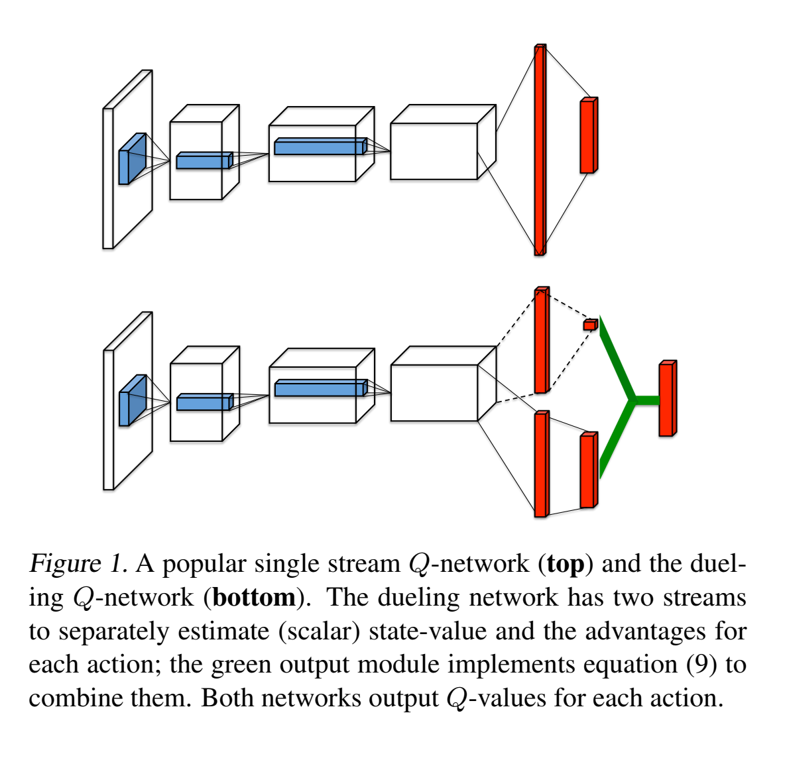
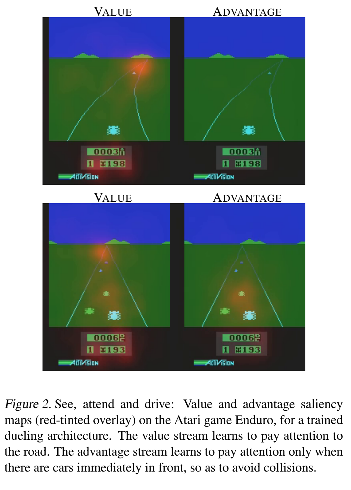
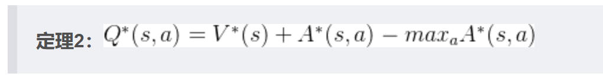
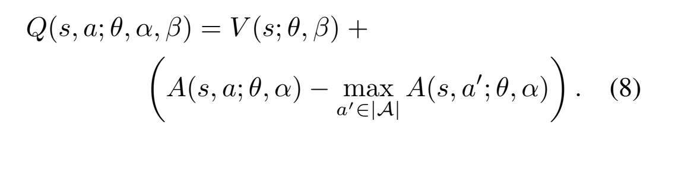
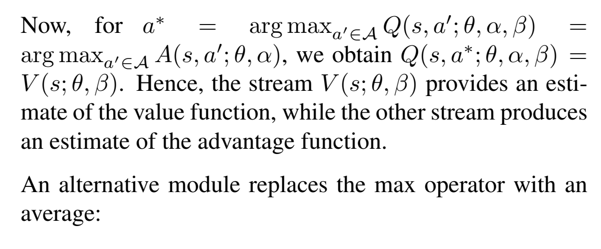
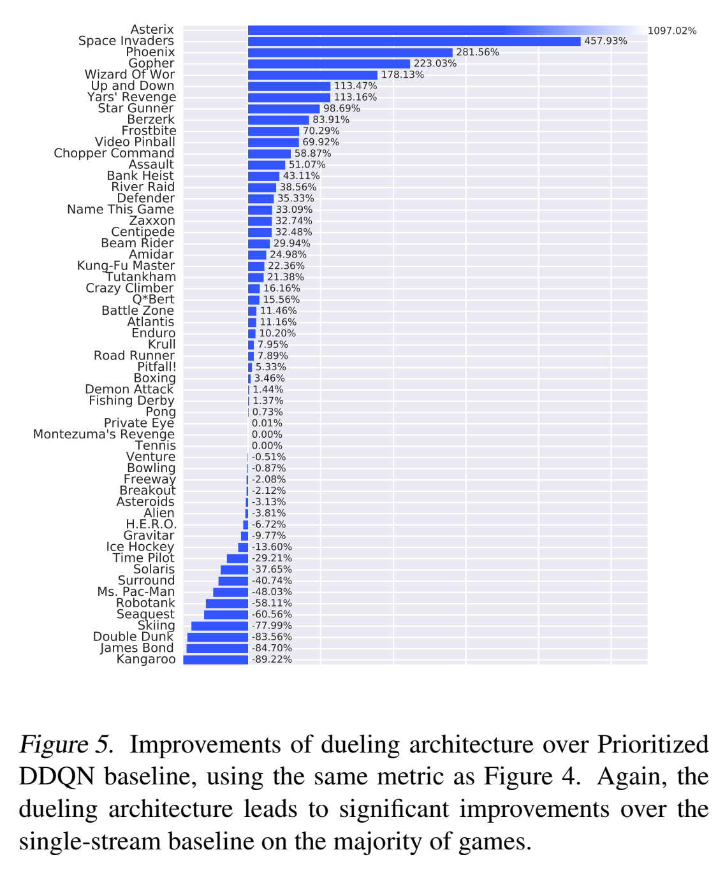

Dueling-DQN
Dueling DQN
Abstract
我们评估两个东西，一个是状态价值，一个是动作优势函数。在动作价值接近的时候，会很work。

为什么要采用对偶网络结构？
其实动机很简单：很多游戏的Q值，只受当前状态影响，无论采取什么动作区别不大。如下图所示：

这是Atari game中的一个赛车游戏，Value表示状态价值，Advantage表示动作优势值，图中黄色部分表示注意力。当前方没有车辆时，智能体左右移动并没有影响，说明动作对Q值没有影响，但是状态对Q值很有影响。从上面两幅图可以看出，Value更加关注远方道路，因为开的越远，对应的状态值越大；Advantage没有特别注意的地方，说明动作没有影响。当前方存在车辆阻挡时，智能体的动作选择至关重要，说明动作对Q值存在影响，同样状态对Q值也会存在影响。从下面两幅图可以看出，Value同样更加关注远方道路，但是Advantge此时会关注前方车辆，因为如果不采取相应动作，智能体很有可能会发生碰撞，分数就会很低。对偶网络思想符合很多场景的设定。
可以看到，状态函数和价值函数关注的是不一样的东西。
定义优势函数：
key for Dueling DQN:
- 很多时候，动作对状态的影响十分有限，有时候不需要对每个action都计算一个估计值。
- 各种之前的优化都用得上
- 对于确定性policy来说，,
- 通过网络对估计后计算
但是，Keep in mind，网络是有误差的，如果V降低10，所有A都增加10，按照反向传播来看就是没有误差，意味着简单这样做，V和A没有一个稳定的唯一值，造成网络估计来回震荡，不准确，且没法收敛。
Dueling DQN的完善



提高稳定性：
- A和V反向传播回最后一层卷积层梯度乘以
- 所有梯度clip到norm 10.
改成mean有以下变化：
- 失去原始意义，且引入了bias
- mean比max变化更平缓，更加stable
- 也能缓解A和V identification丢失的问题
Dueling DQN优点：
- 在action很多且接近的情况下，会学到一个genera的状态价值，这个状态价值会被那些众多相似的动作分享，让收敛加速了，这在一些action space大的任务中很常见。
- 每一个动作都相当于资源去更新V函数，所以V的估计会更准确。
- 当best action和suboptimal action差值很小（比如0.01），而状态估计很大（比如15），此时一般的DQN往往会因为noise，而改变动作选择。但是Dueling network is robust to this effect.
- Dueling network与DQN最主要的不同就是将State与action进行了一定程度的分离，虽然最终的输出依然相同，但在计算的过程中，state不再完全依赖于action的价值来进行判断，可以进行单独的价值预测。这其实是十分有用的，模型既可以学习到某一个state的价值是多少，也可以学习到在该state下不同action的价值是多少，它可以对环境中的state和action进行相对独立而又紧密结合的观察学习，可以进行更灵活的处理。同时在某些state中，action的选择并不会对state产生影响，这时候Dueling模型就可以有更加强大的表现。这是非常好理解的，DQN只能根据State下action的价值Q(s,a)对state进行预测，当action对state的影响很小的时候（二者之间没有足够的联系），这时可以单独预测的Dueling自然有更好的发挥。

All articles in this blog are licensed under CC BY-NC-SA 4.0 unless stating additionally.